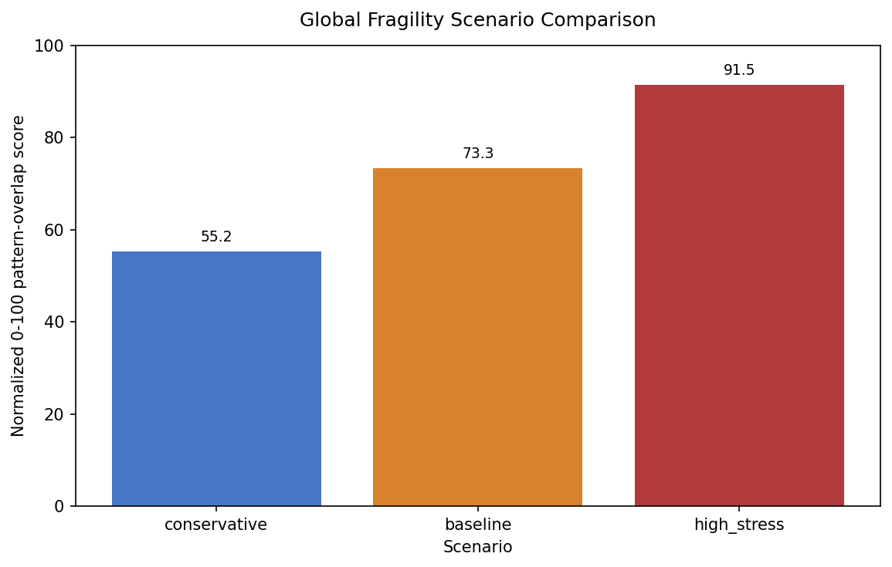

April 2026
Collapse Pathways
Comparative historical collapse-pattern analysis and uncertainty-aware fragility scenarios.


Research question
Which factors recur across major historical collapses, which combinations cluster together, and how strongly do those historical patterns overlap with selected present-day conditions?
Method
The dataset uses explicit coding, uncertainty markers, source counts and phase labels. The present-day extension is exploratory and non-predictive.